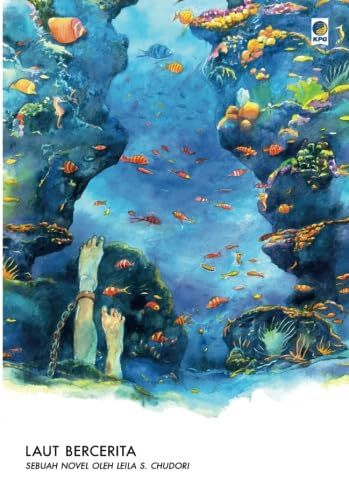

Laut Bercerita
190.000
Novel Laut Bercerita karya Leila S. Chudori adalah fiksi sejarah yang kuat dan mengharukan tentang perjuangan mahasiswa aktivis pada masa Orde Baru di Indonesia, berfokus pada peristiwa penghilangan paksa tahun 1998.

The Adventures of Sherlock Holmes
210.000
Sherlock Holmes adalah detektif fiksi legendaris ciptaan Sir Arthur Conan Doyle yang pertama kali muncul pada tahun 1887. Berbasis di 221B Baker Street, London, ia dikenal sebagai "detektif konsultan" yang memecahkan kasus-kasus rumit menggunakan metode observasi tajam dan penalaran deduktif.
.jpg)
SYNNE LEA OG STIAN HOLE NATTEVAKT
140.000
(The Night Watch) adalah kumpulan puisi untuk anak-anak hasil kolaborasi antara penulis Synne Lea dan ilustrator ternama Stian Hole. Buku yang terbit pada tahun 2013 ini dikenal karena kedalaman emosinya dan visualnya yang memukau.

Spirited Away
180.000
komik dari film Spirited Away yang dikenal sebagai Spirited Away Film Comic. Namun, ini bukanlah manga orisinal dalam arti tradisional, melainkan adaptasi langsung dari filmnya